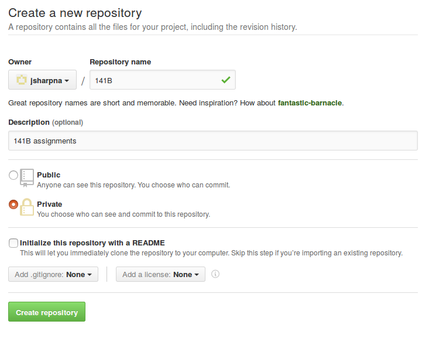

What is a Versioning System?
Git is an open source software (code that is free to use and develop by anyone) that provides version control. Imagine that you are working with team of people on the same file, say you all have access to the same Dropbox directory. You could all change the same file, but then when any of you syncs your changes then it will overwrite the other changes. You could set times to edit, such as Don edits from 10am-12pm, Peggy edits from 12pm-2pm, and Joan edits from 2pm-4pm. Or you could keep versions of files by changing the file name, so when I edit lucky_strikes_v3.py then I edit and save as lucky_strikes_v4.py. These all seem cumbersome, and versioning systems provide a better way. Git (and other versioning systems) provides the following features:
- A history of changes to files serving as a backup.
- Developers can work concurrently and then with the help of git merge their changes.
- Tracing what changes were made by who when.
I will present the functionality of git via the command line. In 141C, you will learn much more about using linux, but I would encourage you to take this time to start using it now with either cloud computing or by installing linux on your own machine. While you can start a git repository on any linux machine, we will focus on using GitHub as a central repository. So while I will make you learn what is going on behind the scenes, you can use the GitHub client most of the time. Some resources about using git with the command line are here:
Check point 1: Complete the GitHub git tutorial, and download git client for Mac, Windows, or install on linux (google git install for your linux distribution)
Setting up your repositories
First you need an account on GitHub, so create one. Let's begin by setting up your 141B assignment repository on GitHub. Once you are logged it, click on "new repository" and then you create a repo under your username named "141B" that is private.

Then initialize the repository according to the instructions, or using the GitHub desktop app.
At the 141B repo click on Settings and Collaborators, then add jsharpna and lixyak.
A quick note: Files on your computer are just a bunch of bytes (strings of 0's and 1's) on your harddrive. A plain text editor reads these as characters via ASCII, which is a dictionary that converts bytes to characters (like how Ribosomes convert RNA base pairs to amino acids). So you can start a new file using an editor like emacs, vi, or notepad, and write something there like "Hello world." and then save it as "hello.txt" or "hello" or whatever. Then it writes the bytes that those characters correspond to on your hard drive. If you do the same thing in Word and save it as a Word file, then Word converts it to a different set of bytes and this process is proprietary (it is a closely guarded secret like the recipe for CocaCola). Never send me a Word document, when I open it in emacs it will look like \320\317^Q\340\241\261^Z\341^@^@^@^@^@^@^@^@ and you may lose points.
Checkpoint 2: In your 141B repo, add a file titled "info.txt" with your full name, major, and what you want to get out of this class (separate each of these by a new line). Git add, commit with a message, and push.
Now, you should set up your personal site, which will serve as your 'data science portfolio'. So a browser like Firefox is just a program that can interpret certain file formats, like html. When you point your browser to a folder, like https://github.com/ it looks for a file called index.html there, interprets, and displays it. Every other file (like this one that you are reading now) need to be pointed to by name on your browser. We'll start by initializing the repository with the GitHub automatic page generator: